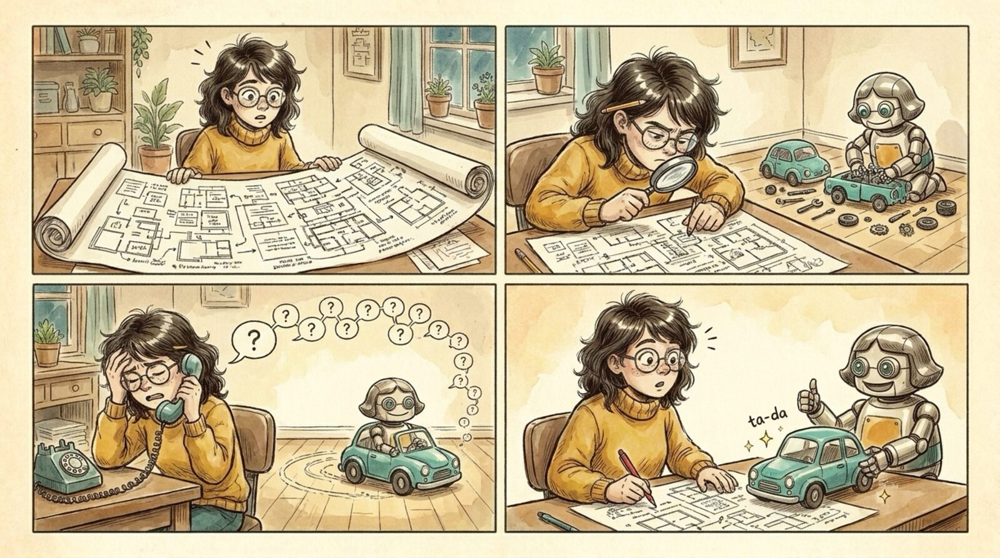

<section id="w03" data-transition="fade" style="background:#F5EEE0;color:#222222;font-family:Arial, Helvetica, sans-serif;padding:0;display:flex;flex-direction:column">

<aside>Wrong #2: reviewing other people's ideas is still expensive. Understanding the "why" costs more than building the thing, so letting others build it doesn't save much time.</aside>
</section>
